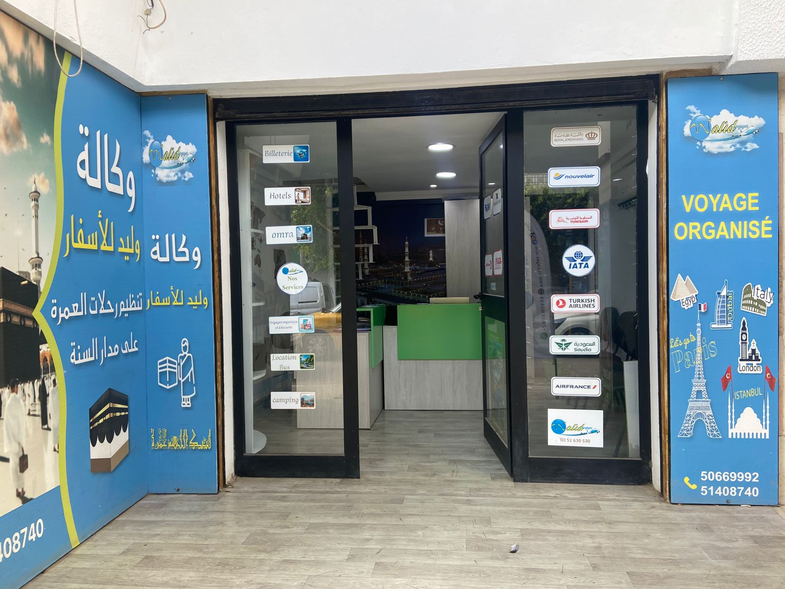

SFAX • TUNISIE
AGENCE DE VOYAGES & TOURISME
Walid Voyages Sfax
Votre prochaine destination commence ici.
Agence Sfax
Voyagez avec Walid Voyages.
Vols • Hôtels • Omra • Voyages organisés
📍 Walid Voyages SfaxOuvrir Google Maps / itinéraire↗★ Avis Google — Walid Voyages Sfax
Consulter les avis et notes publiés sur Google Maps↗
Accès rapide
✈ Billets d’avion
🏨 Hôtels
🕋 Omra
🧳 Voyages organisés